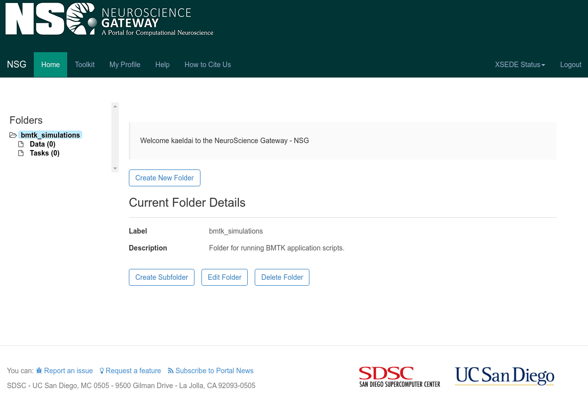
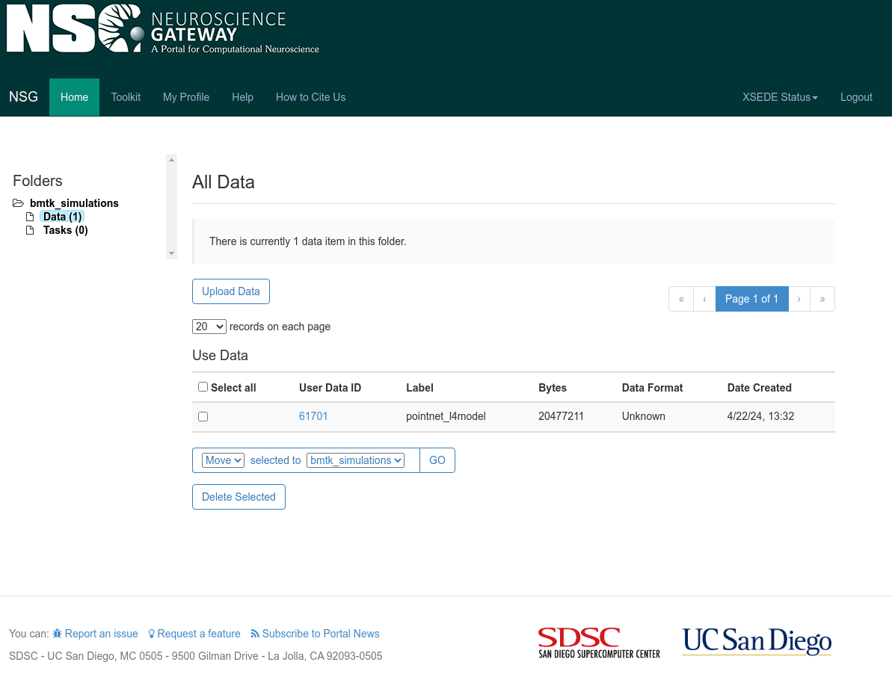
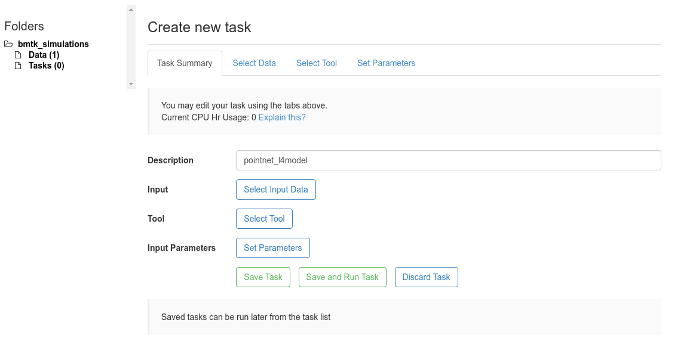
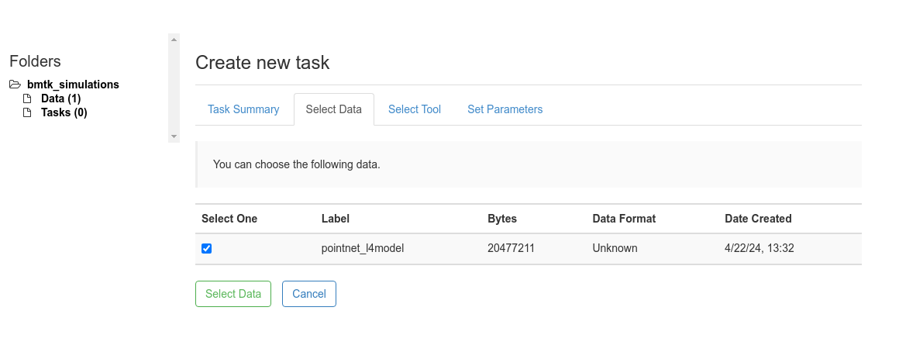
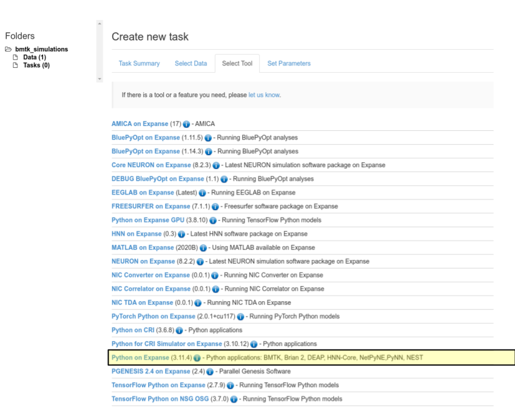
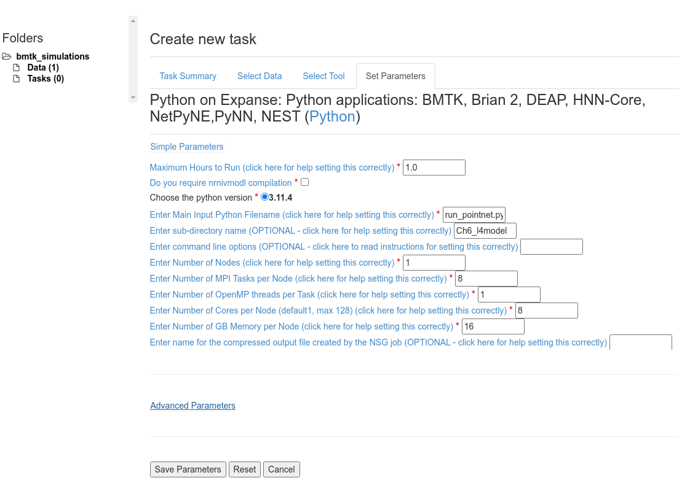
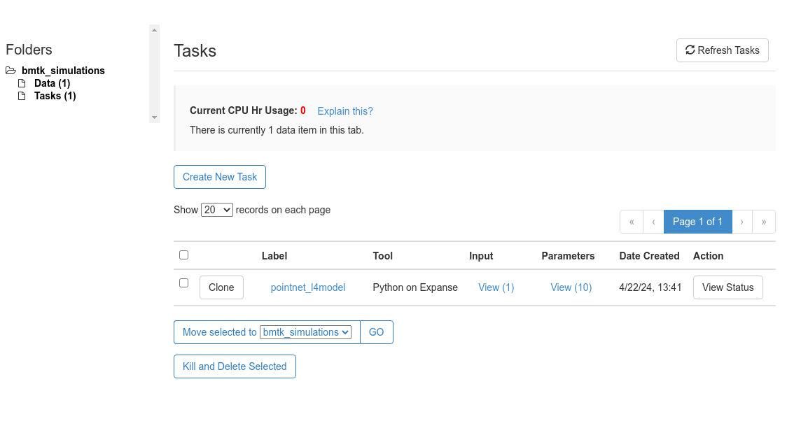
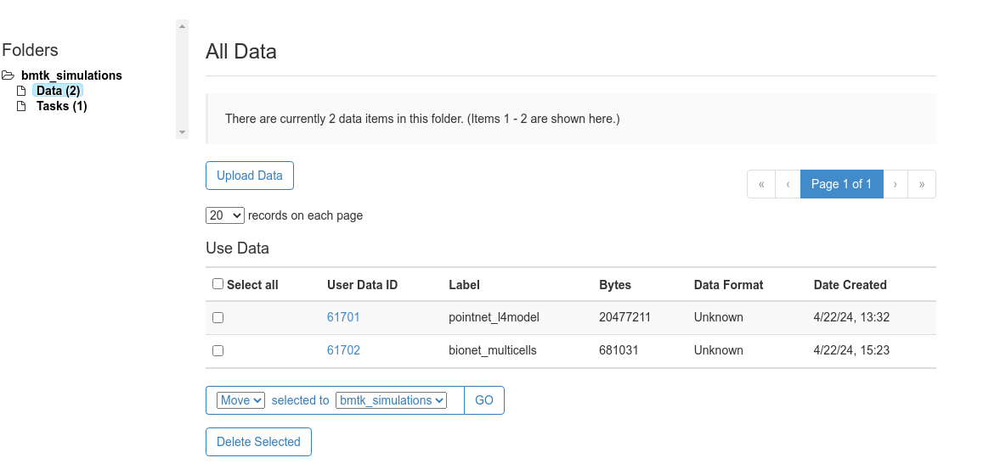
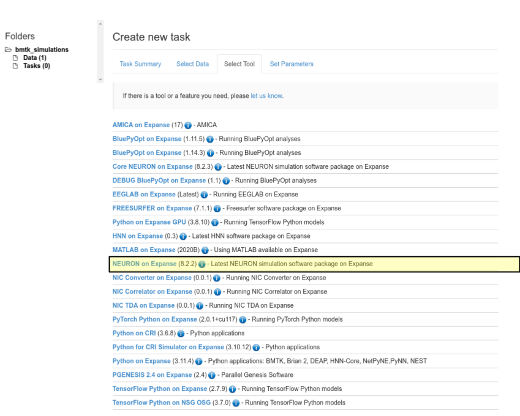
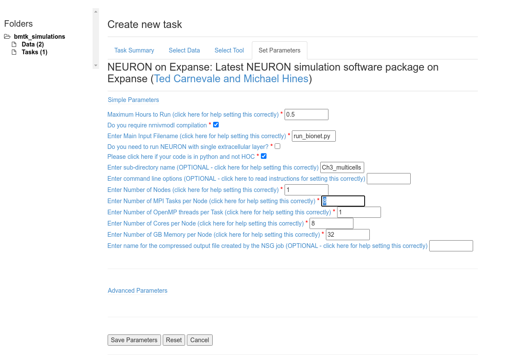

External Resources for Large-Scale Network Modeling#
Building, simulating, and analyzing large-scale network models can often be a resource intensive process. Although BMTK can often run simple-to-moderate network models using commercially available hardware - many scientists will find themselves quickly requiring access to High-Performance Computing (HPC) resources when the computational, memory, and/or storage requirements become greater than even the best modern laptops and desktops. When this happens you will have to rely on the resources of you institution’s computing facilities or even on the Cloud Computing Platforms.
Beyond access to more powerful computing and memory resources, there are other benefits to using Cloud and HPC resources in your workflow! Using a shared environment can improve collaboration and replication, reducing the headaches and pitfalls when every one has to install the software requirements on their own machines.
In this tutorial we provide a list of tools and resources that neuroscientists can take advantage of.
Note - scripts and files for running this tutorial can be found in the directory 06_opt_hpc_resources/
1. Neuroscience Gateway (NSG)#
The Neuroscience Gateway (NSG) is an NSF funded project that provides HPC resouces for neuroscienists. It provides access to extensive CPU, GPU, and Memory resources that may not always be available locally. But just as important, NSG includes a wide variety of pre-installed computational neuroscience software that can be used for everything from modeling, data analysis, and even AI and ML applications. For modeling and simulation not only does NSG include BMTK, but also other popular tools like NEURON, NEST, Brian, PyNN, NetPyNE, among others. See https://nsgprod.sdsc.edu:8443/portal2/tools.action for a list of available software.
The Neuroscience Gateway can be accessed in two different ways, either through the Web Portal interface or through the REST API. The focus in this tutorial will be on using the Web Portal.
1.1. Example: Using NSG to run L4 Model simulations#
As an example of how one can utilize NSG running BMTK we will take the existing Mouse V1 Layer 4 Model network and use it to run simulations on the Expanse computing cluster.
Step 1: (Register and) Log-in#
If you are planning to use NSG for your research you will first need to register an account at https://www.nsgportal.org/gest/reg.php. It is freely available to most researchers, educators, and students working in the neuroscience field.
After you have registered go ahead and log in to the NSG Portal
Step 2: Packaging the environment files#
We will need to package all necessary files into a .zip folder to be uploaded to NSG. This will include the run_pointnet.py python script to execute, plus any necessary SONATA and model files.
Remember to download the files from the Mouse V1 Layer 4 Model tutorial.
$ cd ../ && zip -rq l4model.zip Ch6_l4model/
Step 3: Setting Up an NSG Folder#
When you login you will be prompted to
Create New Folderthat can be used for running BMTK applications. Click on that button, we will give it a “Label” of bmtk_simulations and an appropiate description:

Navagate to bmtk_simulations > Data and select the
Upload Databutton. Provide an appropiate label (we’ll use Label pointnet_l4model) and click theChoose Filebutton to upload the previously created zip file. ClickSaveto upload the file.

Step 4: Setup and Run Task#
Navigate to the bmtk_simulations > Tasks folder and select
Create New Taskbutton.First give a
Descriptionfor the task - we’ll call it pointnet_l4model

Under the
Select Datapanel choose the uploaded zip file for with the pointent_l4model Label and clickSelect Data

Under the
Select Toolpanel we select the Python on Expanse option

Finally Select the
Set ParametersPanel to give the run-time parameters. Enter the parameters as specified below and click theSave Parametersbutton.

Set Max Hours to Run: 1.0 - Depending on the size of the network, the tstop and dt, and the number of Cores we may have to increase/decrease this value.
Unselect Do you require nrnivmodl compilation - flag only applies to NEURON (eg. BioNet) applications.
Set Enter Main Input Python Filename: run_pointnet.py - Entry python script to run.
Set Enter sub-directory name: Ch6_l4model - This is required since the way we zipped up our data everything is under the Ch6_l4model/ folder.
To speed up the simulation we will run it parallelized using MPI with 8 processes.
Set Enter Number of Nodes: 1 - Since we use significantly less than the available cores/memory per node we can benefit from keeping all MPI Tasks on the same node.
Set Enter Number of MPI Tasks per Node: 8 and Enter Number of Cores per Node: 8
Set Enter Number of GB Memory per Node: 16
Notes: Building the Network and LGN Inputs
Running the run_pointnet.py script requires that the SONATA network files (network/) and lgn inputs (inputs/spikes.gratings.90deg_4Hz.h5) already exists. If they don’t, or you want to re-generate them, you can replace the Enter Main Input Python Filename: option with the build_network.py or run_filternet.py scripts.
Now that you have selected the data, the tool, and the parameters click the
Save and Run Taskbutton to submit the task to the HPC.
Fetching the Results#
After clicking on Save and Run Task the task will be submitted to the NSQ queue. Depending on current HPC usage and the requested resources there may be a delay between the time when a job is submitted and the time the task starts running. You can select the View Status button to see the Status of the current task.

1.2. Example: Using NSG for BioNet (eg. NEURON) Simulations#
The above tutorial will work when running PointNet, FilterNet, Builder, or Analysis components of BMTK. However running BioNet simulations require a slight changes to intialize a task properly since it requires using the NEURON simulation underneath. In this example we will show a how to run a multi-core BioNet simualation using the network generated in bmtk-workshop Chapter 3 taking note to highlight difference from the example above.
Step 1: Packaging Data#
We first want to package the Ch3_mutlicells/ folder into a single zip file so it will contain the python scripts and all necessary network and model files to run the full simulation. HOWEVER The modfiles stored in the components/mechanisms/modfiles/ folder need to be moved to the root directory. NSG will need to compile these files before running the simulation and if they are stored under the components/ sub-directory they will not be found.
$ cp -r ../Ch3_multicells .
$ mv Ch3_multicells/components/mechanisms/modfiles/* Ch3_multicells/
$ zip -rq bionet_multicells.zip Ch3_multicells/
Step 2: Uploading the Data#
Log into NSGPortal and either select
Create New Folder, or select the existing bmtk_simulations folder if it exists.Under bmtk_simulations > Data folder select
Upload Datato upload the created bionet_multicells.zip folder with an descriptive Label

Step 3: Creating and Submitting a Task#
Under bmtk_simulations > Tasks select the Create New Task button
In the
Task Summarytab give the task an appropiate description (we’ll call it bionet_multicells)In the
Select Datatab make sure to select the bionet_multicell data we uploaded in the previous step and clickSelect Data.In the
Select Tooltab choose option NEURON on Expanse

In the
Set Parameterstab we can use the following setup, the clickSave Parametersbutton.

The following parameters are important
Make sure the select Do you require nrnivmodl compilation in order to compile the .mod file necessary to run the models
Set Enter Main Input Filename: run_bionet.py as this is the script to execute the BMTK simulation
Make sure to select Please click here if your code is in python and not HOC
Due to the structure of the zip file we need to set Enter sub-directory name: Ch3_mutlicells
Other settings that can be adjusted:
For a modest network Maximum Hours to Run: 0.5 is plenty enough. But for longer simulations or larger networks you may need to increase this value otherwise the job will stop before BMTK has finished.
We will set Number of MPI Tasks per Node and Number of Cores per Node to 8, and Number of Nodes to 1 to parallelize the simulation on 8 cores.
For current network Number of GB Memory per Node: 32 will suffice.
Finally select
Save and Run Taskto submit the Task to the queue.
[ ]: